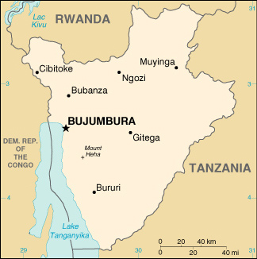

|
Burundi | |
| Introduction Geography People Government Economy Communications Transportation Military Transnational Issues | ||
|  | ||
| Burundi | Introduction | Top of Page |
| Background: | Between 1993 and 2000, wide-spread, often intense ethnic violence between Hutu and Tutsi factions in Burundi created hundreds of thousands of refugees and left tens of thousands dead. Although some refugees have returned from neighboring countries, continued ethnic strife has forced many others to flee. Burundian troops, seeking to secure their borders, have intervened in the conflict in the Democratic Republic of the Congo. |
| Burundi | Geography | Top of Page |
| Location: | Central Africa, east of Democratic Republic of the Congo |
| Geographic coordinates: | 3 30 S, 30 00 E |
| Map references: | Africa |
| Area: |
total:
27,830 sq km
land: 25,650 sq km water: 2,180 sq km |
| Area - comparative: | slightly smaller than Maryland |
| Land boundaries: |
total:
974 km
border countries: Democratic Republic of the Congo 233 km, Rwanda 290 km, Tanzania 451 km |
| Coastline: | 0 km (landlocked) |
| Maritime claims: | none (landlocked) |
| Climate: | equatorial; high plateau with considerable altitude variation (772 m to 2,670 m above sea level); average annual temperature varies with altitude from 23 to 17 degrees centigrade but is generally moderate as the average altitude is about 1,700 m; average annual rainfall is about 150 cm; wet seasons from February to May and September to November, and dry seasons from June to August and December to January |
| Terrain: | hilly and mountainous, dropping to a plateau in east, some plains |
| Elevation extremes: |
lowest point:
Lake Tanganyika 772 m
highest point: Mount Heha 2,670 m |
| Natural resources: | nickel, uranium, rare earth oxides, peat, cobalt, copper, platinum (not yet exploited), vanadium, arable land, hydropower |
| Land use: |
arable land:
44%
permanent crops: 9% permanent pastures: 36% forests and woodland: 3% other: 8% (1993 est.) |
| Irrigated land: | 140 sq km (1993 est.) |
| Natural hazards: | flooding, landslides, drought |
| Environment - current issues: | soil erosion as a result of overgrazing and the expansion of agriculture into marginal lands; deforestation (little forested land remains because of uncontrolled cutting of trees for fuel); habitat loss threatens wildlife populations |
| Environment - international agreements: |
party to:
Biodiversity, Climate Change, Desertification, Endangered Species, Hazardous Wastes, Ozone Layer Protection
signed, but not ratified: Law of the Sea, Nuclear Test Ban |
| Geography - note: | landlocked; straddles crest of the Nile-Congo watershed |
| Burundi | People | Top of Page |
| Population: |
6,223,897
note: estimates for this country explicitly take into account the effects of excess mortality due to AIDS; this can result in lower life expectancy, higher infant mortality and death rates, lower population and growth rates, and changes in the distribution of population by age and sex than would otherwise be expected (July 2001 est.) |
| Age structure: |
0-14 years:
46.82% (male 1,472,618; female 1,441,548)
15-64 years: 50.37% (male 1,541,131; female 1,593,743) 65 years and over: 2.81% (male 71,984; female 102,873) (2001 est.) |
| Population growth rate: | 2.38% (2001 est.) |
| Birth rate: | 40.13 births/1,000 population (2001 est.) |
| Death rate: | 16.36 deaths/1,000 population (2001 est.) |
| Net migration rate: | 0 migrant(s)/1,000 population (2001 est.) |
| Sex ratio: |
at birth:
1.03 male(s)/female
under 15 years: 1.02 male(s)/female 15-64 years: 0.97 male(s)/female 65 years and over: 0.7 male(s)/female total population: 0.98 male(s)/female (2001 est.) |
| Infant mortality rate: | 70.74 deaths/1,000 live births (2001 est.) |
| Life expectancy at birth: |
total population:
46.06 years
male: 45.15 years female: 46.99 years (2001 est.) |
| Total fertility rate: | 6.16 children born/woman (2001 est.) |
| HIV/AIDS - adult prevalence rate: | 11.32% (1999 est.) |
| HIV/AIDS - people living with HIV/AIDS: | 360,000 (1999 est.) |
| HIV/AIDS - deaths: | 39,000 (1999 est.) |
| Nationality: |
noun:
Burundian(s)
adjective: Burundi |
| Ethnic groups: | Hutu (Bantu) 85%, Tutsi (Hamitic) 14%, Twa (Pygmy) 1%, Europeans 3,000, South Asians 2,000 |
| Religions: | Christian 67% (Roman Catholic 62%, Protestant 5%), indigenous beliefs 23%, Muslim 10% |
| Languages: | Kirundi (official), French (official), Swahili (along Lake Tanganyika and in the Bujumbura area) |
| Literacy: |
definition:
age 15 and over can read and write
total population: 35.3% male: 49.3% female: 22.5% (1995 est.) |
| Burundi | Government | Top of Page |
| Country name: |
conventional long form:
Republic of Burundi
conventional short form: Burundi local long form: Republika y'u Burundi local short form: Burundi former: Urundi |
| Government type: | republic |
| Capital: | Bujumbura |
| Administrative divisions: | 16 provinces; Bubanza, Bujumbura, Bururi, Cankuzo, Cibitoke, Gitega, Karuzi, Kayanza, Kirundo, Makamba, Muramvya, Muyinga, Mwaro, Ngozi, Rutana, Ruyigi |
| Independence: | 1 July 1962 (from UN trusteeship under Belgian administration) |
| National holiday: | Independence Day, 1 July (1962) |
| Constitution: | 13 March 1992; provided for establishment of a plural political system; supplanted on 6 June 1998 by a Transitional Constitution which enlarged the National Assembly and created two vice presidents |
| Legal system: | based on German and Belgian civil codes and customary law; has not accepted compulsory ICJ jurisdiction |
| Suffrage: | NA years of age; universal adult |
| Executive branch: |
chief of state:
President Pierre BUYOYA (interim president since 27 September 1996, officially sworn in 11 June 1998), First Vice President Frederic BAMVUGINYUMVIRA (since NA June 1998), Second Vice President Mathias SINAMENYE (since NA June 1998); note - the president is both chief of state and head of government
head of government: President Pierre BUYOYA (interim president since 27 September 1996, officially sworn in 11 June 1998), First Vice President Frederic BAMVUGINYUMVIRA (since NA June 1998), Second Vice President Mathias SINAMENYE (since NA June 1998); note - the president is both chief of state and head of government cabinet: Council of Ministers appointed by president elections: NA; current president assumed power following a coup on 25 July 1996 in which former President NTIBANTUNGANYA was overthrown |
| Legislative branch: |
unicameral National Assembly or Assemblee Nationale (121 seats; note - new Transitional Constitution expanded the number of seats from 81 to 121 in 1998; members are elected by popular vote on a proportional basis to serve five-year terms)
elections: last held 29 June 1993 (next was scheduled to be held in 1998, but suspended by presidential decree in 1996) election results: percent of vote by party - FRODEBU 71.04%, UPRONA 21.4%, other 7.56%; seats by party - FRODEBU 65, UPRONA 16, various other parties 40 |
| Judicial branch: | Supreme Court or Cour Supreme; Constitutional Court; Courts of Appeal (there are three in separate locations); Tribunals of First Instance (17 at the province level and 123 small local tribunals) |
| Political parties and leaders: |
Two national, mainstream governing parties are: Unity for National Progress or UPRONA [Luc RUKINGAMA, president]; Burundi Democratic Front or FRODEBU [Jean MINANI, president]
note: A multiparty system was introduced after 1998, included are: Burundi African Alliance for the Salvation or ABASA [Terrence NSANZE]; Rally for Democracy and Economic and Social Development or RADDES [Joseph NZENZIMANA]; Party for National Redress or PARENA [Jean-Baptiste BAGAZA]; People's Reconciliation Party or PRP [Mathias HITIMANA] |
| Political pressure groups and leaders: | Loosely organized Tutsi militias, often affiliated with Tutsi extremist parties |
| International organization participation: | ACCT, ACP, AfDB, CCC, CEEAC, CEPGL, ECA, FAO, G-77, IBRD, ICAO, ICRM, IDA, IFAD, IFC, IFRCS, ILO, IMF, Intelsat (nonsignatory user), Interpol, IOC, ITU, NAM, OAU, OPCW, UN, UNCTAD, UNESCO, UNIDO, UPU, WHO, WIPO, WMO, WToO, WTrO |
| Diplomatic representation in the US: |
chief of mission:
Ambassador Thomas NDIKUMANA
chancery: Suite 212, 2233 Wisconsin Avenue NW, Washington, DC 20007 telephone: [1] (202) 342-2574 FAX: [1] (202) 342-2578 |
| Diplomatic representation from the US: |
chief of mission:
Ambassador Mary Carlin YATES
embassy: Avenue des Etats-Unis, Bujumbura mailing address: B. P. 1720, Bujumbura telephone: [257] 223454 FAX: [257] 222926 |
| Flag description: | divided by a white diagonal cross into red panels (top and bottom) and green panels (hoist side and outer side) with a white disk superimposed at the center bearing three red six-pointed stars outlined in green arranged in a triangular design (one star above, two stars below) |
| Burundi | Economy | Top of Page |
| Economy - overview: | Burundi is a landlocked, resource-poor country with an underdeveloped manufacturing sector. The economy is predominantly agricultural with roughly 90% of the population dependent on subsistence agriculture. Its economic health depends on the coffee crop, which accounts for 80% of foreign exchange earnings. The ability to pay for imports therefore rests largely on the vagaries of the climate and the international coffee market. Since October 1993 the nation has suffered from massive ethnic-based violence which has resulted in the death of perhaps 250,000 persons and the displacement of about 800,000 others. Only one in four children go to school, and one in nine adults has HIV/AIDS. Foods, medicines, and electricity remain in short supply. |
| GDP: | purchasing power parity - $4.4 billion (2000 est.) |
| GDP - real growth rate: | 1.8% (2000 est.) |
| GDP - per capita: | purchasing power parity - $720 (2000 est.) |
| GDP - composition by sector: |
agriculture:
50%
industry: 18% services: 32% (1999 est.) |
| Population below poverty line: | 36.2% (1990 est.) |
| Household income or consumption by percentage share: |
lowest 10%:
3.4%
highest 10%: 26.6% (1992) |
| Inflation rate (consumer prices): | 22% (2000 est.) |
| Labor force: | 1.9 million |
| Labor force - by occupation: | NA |
| Unemployment rate: | NA% |
| Budget: |
revenues:
$125 million
expenditures: $176 million, including capital expenditures of $NA (2000 est.) |
| Industries: | light consumer goods such as blankets, shoes, soap; assembly of imported components; public works construction; food processing |
| Industrial production growth rate: | 6.3% (1999 est.) |
| Electricity - production: | 141 million kWh (1999) |
| Electricity - production by source: |
fossil fuel:
0.71%
hydro: 99.29% nuclear: 0% other: 0% (1999) |
| Electricity - consumption: | 160.1 million kWh (1999) |
| Electricity - exports: | 0 kWh (1999) |
| Electricity - imports: |
29 million kWh
note: supplied by the Democratic Republic of the Congo (1999) |
| Agriculture - products: | coffee, cotton, tea, corn, sorghum, sweet potatoes, bananas, manioc (tapioca); beef, milk, hides |
| Exports: | $32 million (f.o.b., 2000) |
| Exports - commodities: | coffee, tea, sugar, cotton, hides |
| Exports - partners: | Germany 17%, Belgium 14%, US 8%, France 6%, Switzerland 4% (1999) |
| Imports: | $110 million (f.o.b., 2000) |
| Imports - commodities: | capital goods, petroleum products, foodstuffs |
| Imports - partners: | Belgium 20%, Zambia 11%, Kenya 8%, South Africa 5%, France 4% (1999) |
| Debt - external: | $1.12 billion (1999 est.) |
| Economic aid - recipient: | $1.344 billion (1999 est.) |
| Currency: | Burundi franc (BIF) |
| Currency code: | BIF |
| Exchange rates: | Burundi francs per US dollar - 782.36 (January 2001), 720.67 (2000), 563.56 (1999), 477.77 (1998), 352.35 (1997), 302.75 (1996) |
| Fiscal year: | calendar year |
| Burundi | Communications | Top of Page |
| Telephones - main lines in use: | 16,000 (1997) |
| Telephones - mobile cellular: | 619 (1997) |
| Telephone system: |
general assessment:
primitive system
domestic: sparse system of open wire, radiotelephone communications, and low-capacity microwave radio relay international: satellite earth station - 1 Intelsat (Indian Ocean) |
| Radio broadcast stations: | AM 2, FM 2, shortwave 0 (1998) |
| Radios: | 440,000 (1997) |
| Television broadcast stations: | 1 (1999) |
| Televisions: | 25,000 (1997) |
| Internet country code: | .bi |
| Internet Service Providers (ISPs): | 1 (2000) |
| Internet users: | 2,000 (2000) |
| Burundi | Transportation | Top of Page |
| Railways: | 0 km |
| Highways: |
total:
14,480 km
paved: 1,028 km unpaved: 13,452 km (1996) |
| Waterways: | Lake Tanganyika |
| Ports and harbors: | Bujumbura |
| Airports: | 4 (2000 est.) |
| Airports - with paved runways: |
total:
1
over 3,047 m: 1 (2000 est.) |
| Airports - with unpaved runways: |
total:
3
914 to 1,523 m: 3 (2000 est.) |
| Burundi | Military | Top of Page |
| Military branches: | Army (includes naval and air units), paramilitary Gendarmerie |
| Military manpower - military age: | 16 years of age |
| Military manpower - availability: | males age 15-49: 1,394,273 (2001 est.) |
| Military manpower - fit for military service: | males age 15-49: 728,326 (2001 est.) |
| Military manpower - reaching military age annually: | males: 79,360 (2001 est.) |
| Military expenditures - dollar figure: | $57 million (FY97) |
| Military expenditures - percent of GDP: | 6.1% (FY97) |
| Burundi | Transnational Issues | Top of Page |
| Disputes - international: | none |
{kind=link}
{kind=link}